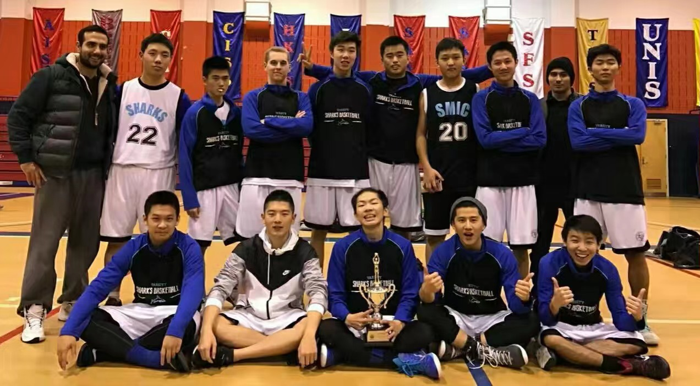
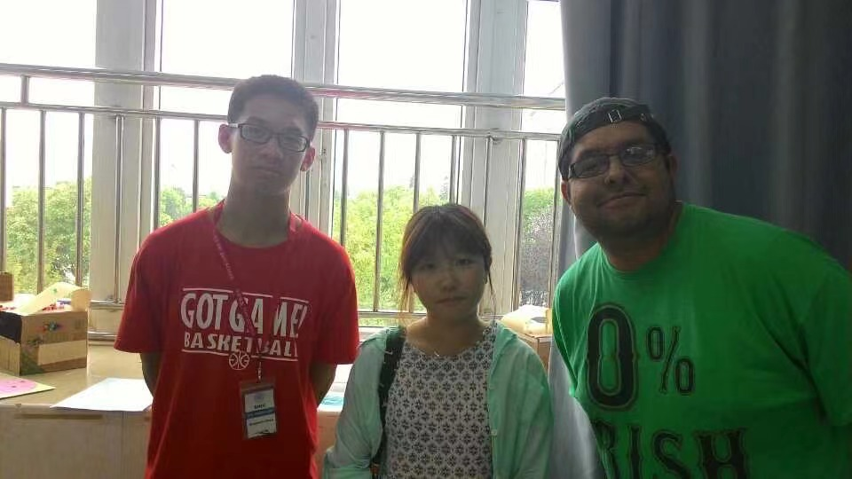
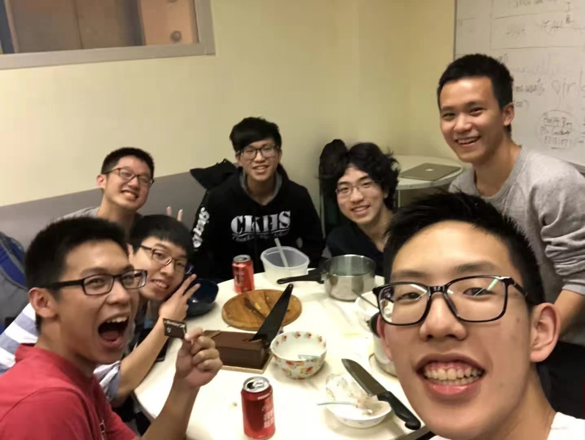
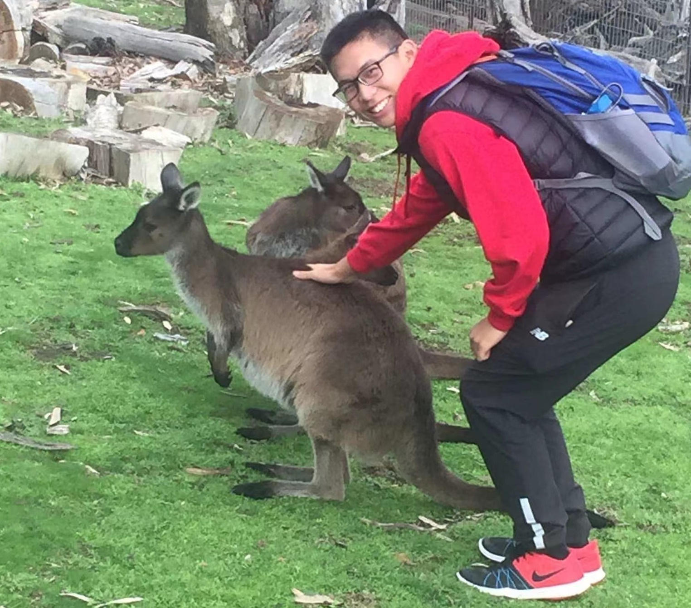
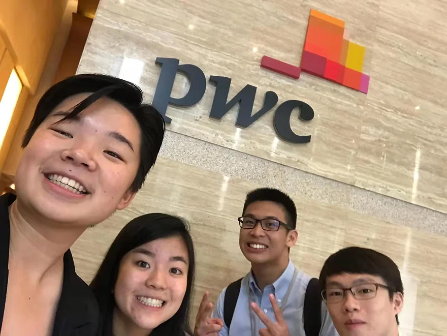
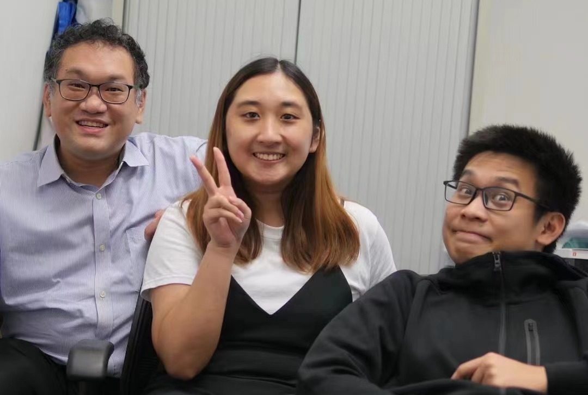
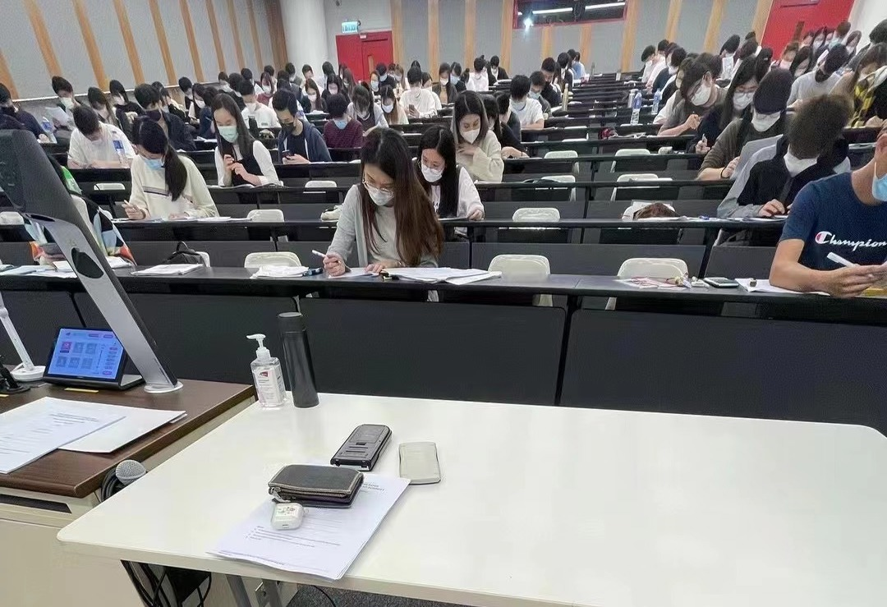
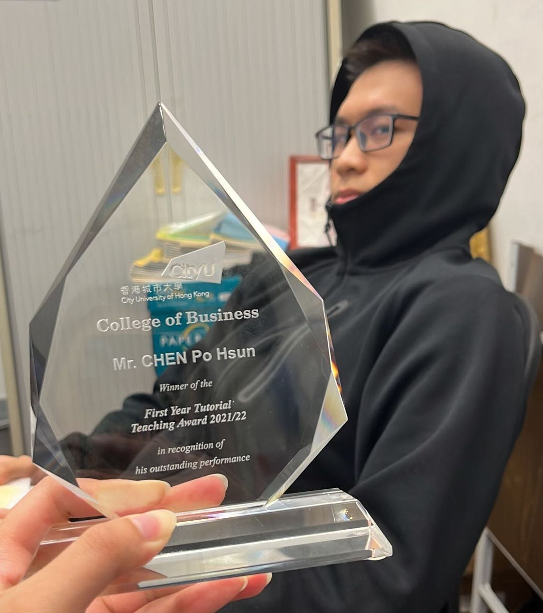
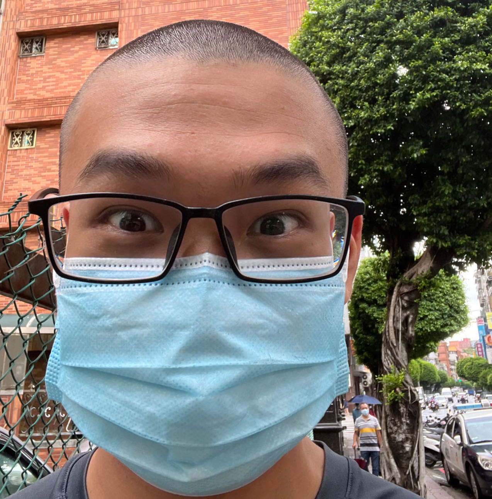
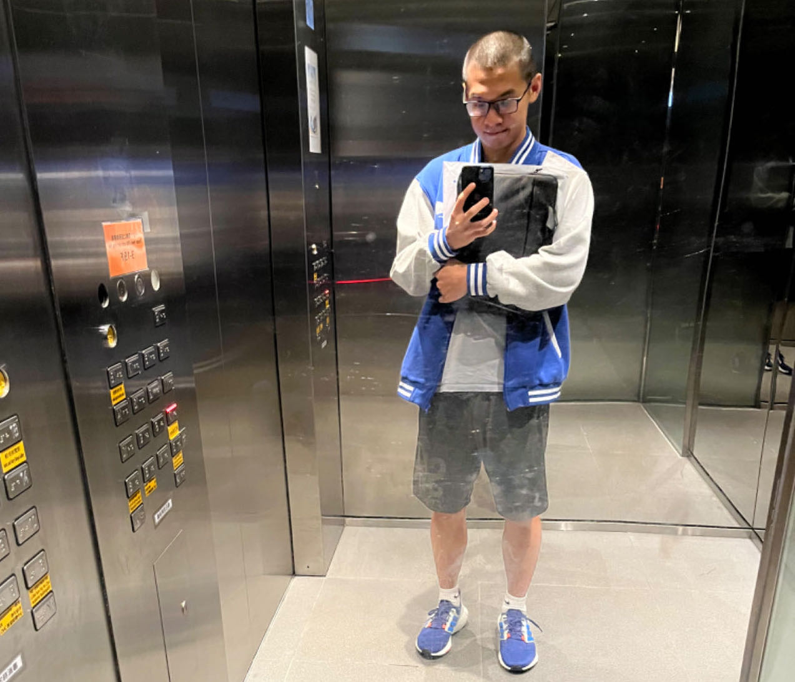

Hi! Good to see you here! My name is Ben and welcome to my personal website. Here's a little bit about myself.
My Story
I was born in Taiwan, but raised in Shanghai, where I studied at the SMIC Private School.

My first working experience was being a teaching assistant at the SMIC Summer Camp, where I found my passion for education.

I eventually went to university at the City University of Hong Kong, majoring in Business Analytics.

My four years of college were fruitful. I participated in a summer program at the University of Adelaide (Australia), did my exchange at the Erasmus University of Rotterdam (the Netherlands), and did another virtual summer school at Tsinghua University (China).

I also did two internships:
- IT Trainee at PricewaterhouseCoopers (PwC) Hong Kong
- Data Analyst Intern at PerkinElmers Shanghai

In year four of my university, I finally settled down to pursue and advance myself in the field of Data Science. I graduated from university with first class honours, ranking second in my class.
My passion for education never faded, so I found my first full-time job as a Graduate Teaching Assistant at my home university.

I taught statistics and numerous data science workshops (SQL, Python, SAS and Tableau), while handling different administrative tasks.

This is also when I started my journey as a content creator. I started writing Kaggle notebooks, blog posts and even published my first Youtube video (travel related)!
I loved my job and even won the First-year Teaching Excellence Award at the end of the academic year.

I went back to Taiwan briefly to complete my mandatory military service. Meanwhile, I began working on my graduate school application.

After my military service, CityU offered me to go back as a Research Assistant, where I would work until the new academic year commences.

I got accepted into the University of British Columbia!!!
What's next? Who knows...but I can't wait to find out!